18 fixes for the live site, rechecked on ugcbreakouts.com on 20 Oct 2026, blockers first. Analysis not finishing, the broken share link and the email on the shared page come first. The rest are scoring, old pages and copy.
| No. | Priority | Area | What's wrong (steps to reproduce) | Expected | Screenshot |
|---|---|---|---|---|---|
| 1 | Blocker | Video analysis#26 | Analysis never finishes. Run a search, open a video that isn't analyzed, tap Analyze video. Today @byharleen (rhode holiday set) sat on “Building your creative strategy…” for 11+ minutes. The 11 Oct one (@.xoxogabby) now reads Failed in history, but its page just shows Analyze video again with no message, and the analysis was still taken from the count. | Analysis finishes in about 30 seconds. If it fails: say so on the page, offer Retry, and give the analysis back. | 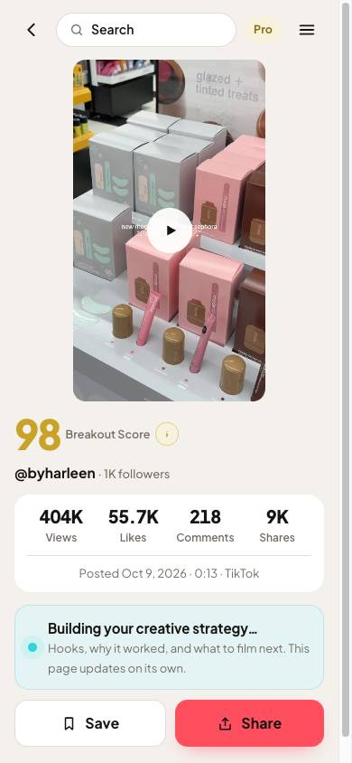 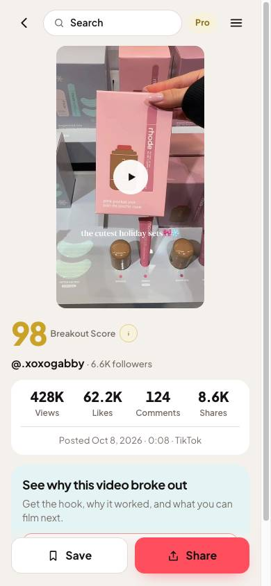 |
| 2 | Blocker | Share#1 | Copied link 404s. Open any analyzed video, tap Share, add a note, tap Copy, paste into a new tab. The clipboard gets the link, two line breaks, then the note, so the pasted address is wrong. | Copy puts only the link on the clipboard. The note already shows on the shared page. | 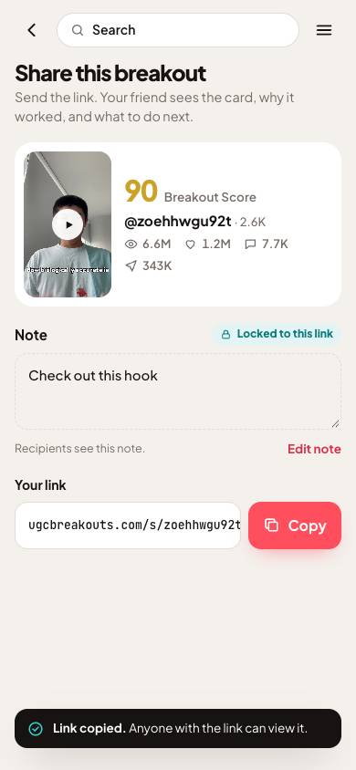 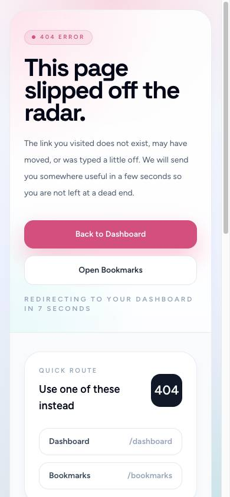 |
| 3 | Blocker | Shared page#27 | Shared page shows the sender's full email. Share any video and open the /s/ link. It reads “First name (email) sent you a breakout”, to anyone with the link. | First name and last initial only, e.g. “Alex R. sent you a breakout”. Never the email. | 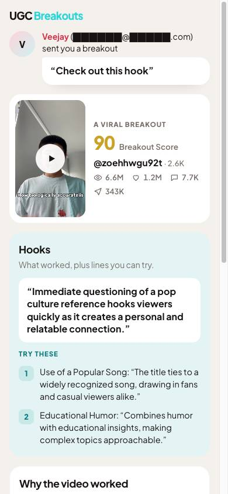 |
| 4 | High | Breakout Score#25 | Score is still based on follower count. Tap “What is Breakout Score?” on any analysis: “views relative to follower count, engagement, and how recently the video was posted”. Same text on the sales page, /top-breakouts and /find-breakouts. | Score against the account's own usual views (median of its 15 latest non-pinned posts, leaving this one out). Example scale: 25 × log10(views ÷ usual views), capped at 100. Copy: “A score from 0 to 100. It shows how much a video beat the average of what that account usually gets.” | 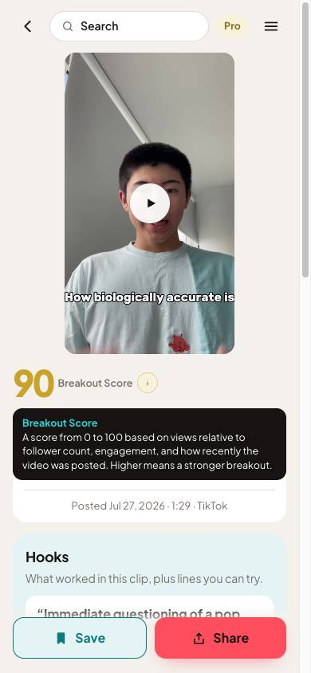 |
| 5 | High | Top Breakouts#22 | Every score reads 100. Signed in, open /top: 60 of 60 cards show 100. Signed out /top-breakouts: 12 of 12. Search results look right (95 down to 69). | Scores spread out like they do in search results. Likely fixed by the score change above. Check after it. | 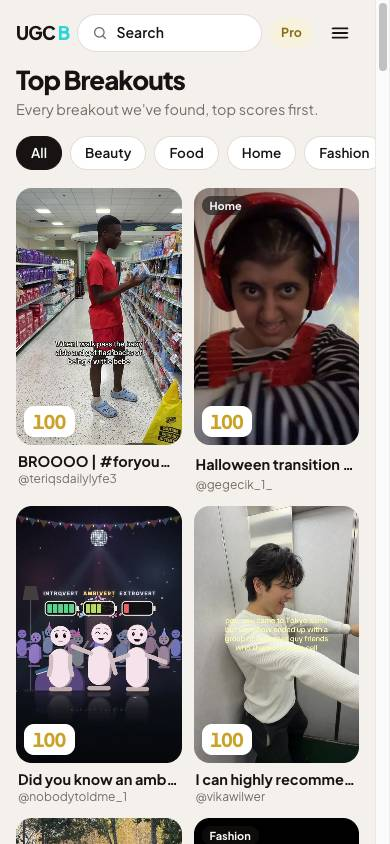 |
| 6 | High | Top Breakouts (public page)#24 | “No preview” on every card. Signed out, open ugcbreakouts.com/top-breakouts: all 12 cards have no thumbnail (the page data sends no image). The signed-in /top feed shows its thumbnails fine. | Public strip uses the same thumbnails as /top, with a saved frame as fallback. | 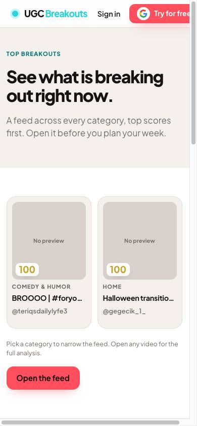 |
| 7 | High | Old library pages#29 | Old Viral Video Finder library is still live. Signed out, /bookmarks and /my-library open an empty library instead of Sign in. Signed in, /my-library and /my-library/analysis-history show the old app: “Outlier score 2518x”, “Ask Sparky”, a Custom Search tab bar, and “Saved videos 0” above 9 videos. The 404 page's “Open Bookmarks” button goes here. | Redirect /bookmarks, /my-library and its sub-pages to /library (signed in) or Sign in (signed out). No “Outlier” anywhere. | 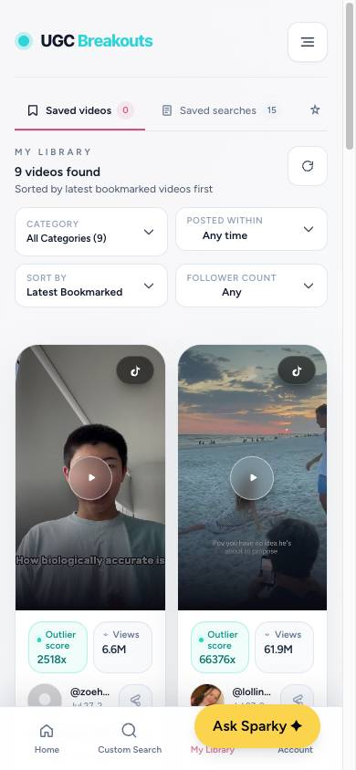 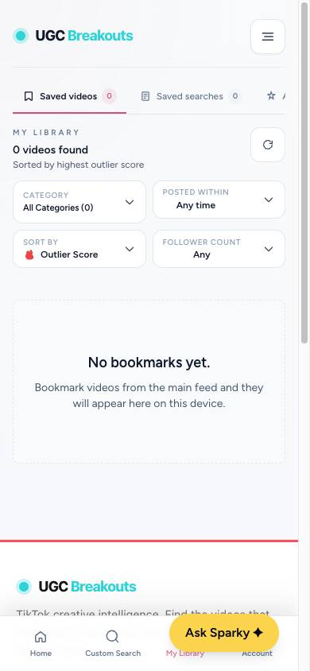 |
| 8 | High | Accountnew | Renewal date is in the past. Account on 20 Oct, still on Pro, says “Renews Oct 5, 2026”. | Show the real next renewal date from Stripe. If the plan didn't renew, Pro should end. | 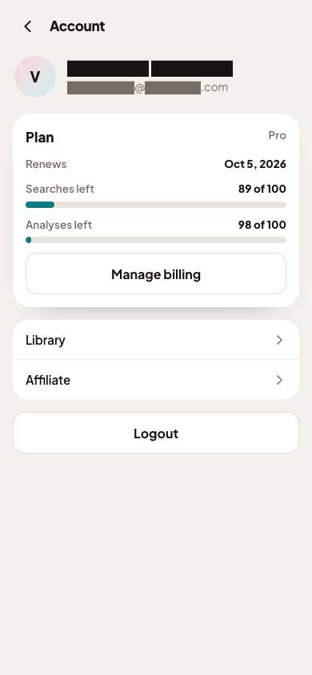 |
| 9 | Normal | Processing#2 | Logo does nothing. Start a search. While it runs, tap “UGC Breakouts” in the top bar. Nothing happens (the logo is set with no link on this screen). | Logo goes Home. | 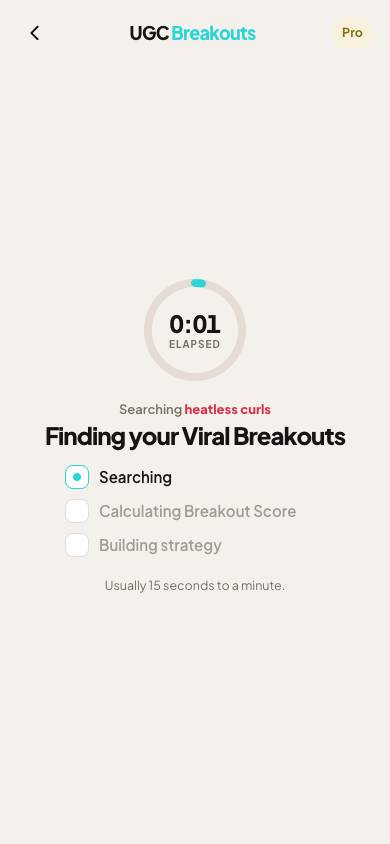 |
| 10 | Normal | Processingnew | Wait time copy is wrong. The screen says “Usually 15 seconds to a minute.” Today's search took 2:34. The 9 searches before it took 1:10 to 4:52. | “Usually 1 to 3 minutes.” Or make searches faster. | |
| 11 | Normal | Video analysis#3 | Top bar search box sends you Home. Open any analysis (or Share) and tap Search in the top bar. It links to /?focus=1. | UGC Breakouts logo in its place, linked Home. | 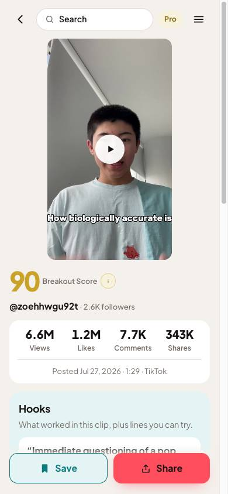 |
| 12 | Normal | Library vs Resultsnew | Search counts don't match. Library and Home say “heatless curls · 140 breakouts” and “costco finds · 98 breakouts”, but Results stops at 60. | Same number in both places: count what Results can show, or let Results go past 60. | 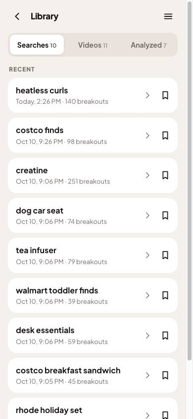 |
| 13 | Normal | 404 page#19 | Old 404. Open any wrong address: “This page slipped off the radar”, buttons to Dashboard and the old Bookmarks, then a redirect after 7 seconds. | UGC Breakouts 404: one line, the search box, a Home link. No auto redirect, no Bookmarks link. | 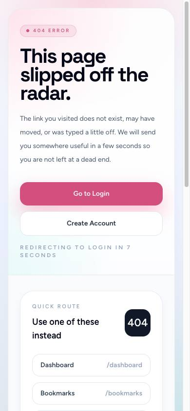 |
| 14 | Normal | Footer pages#28 | Old name and other platforms. Terms, Privacy and Suggestions say “Viral Video Finder”. Contact, Suggestions and Blog have it in the tab title. Blog mentions YouTube Shorts, Instagram Reels, “outlier” and VVF. Footer Pricing links to /#vvf-pricing (and /pricing is a 404). | “UGC Breakouts” everywhere, titles included. TikTok only, “breakout” not “outlier”. Pricing link goes to the pricing section. | 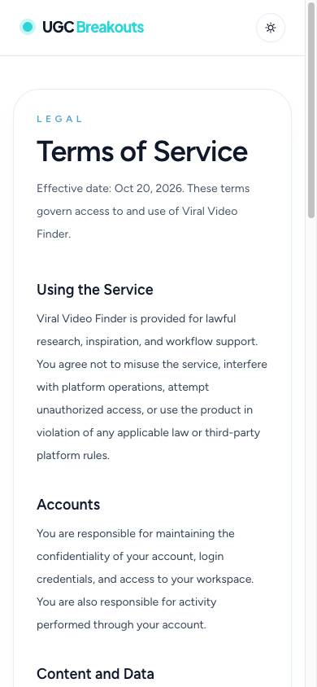 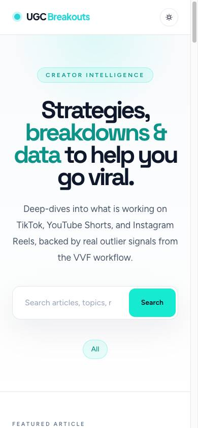 |
| 15 | Normal | Legal pages#30 | Effective date is always today. Terms, Privacy, DPA and Security read “Effective date: Oct 20, 2026” today and read Oct 19 yesterday. DPA and Security also say they're drafts pending legal review. | A fixed effective date per page. Ivan decides if the DPA and Security drafts stay public. | 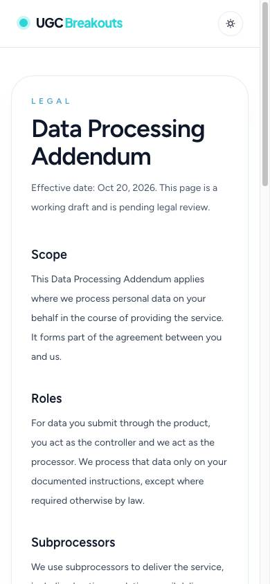 |
| 16 | Normal | Sign up / Log in#31 | Old product copy. /register: “Search trending creators, preview viral videos, and track what's working in your niche - all in one place.” /login: “unlock creator search, playback, and exports from the dashboard.” Neither page has a tab title. | Both use “Find Viral Breakouts. Get the creative strategy to make your own.” Titles “Sign up · UGC Breakouts” and “Log in · UGC Breakouts”. | 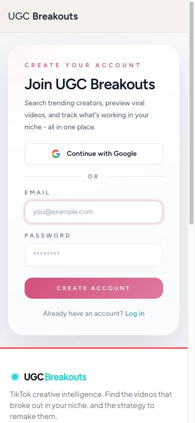 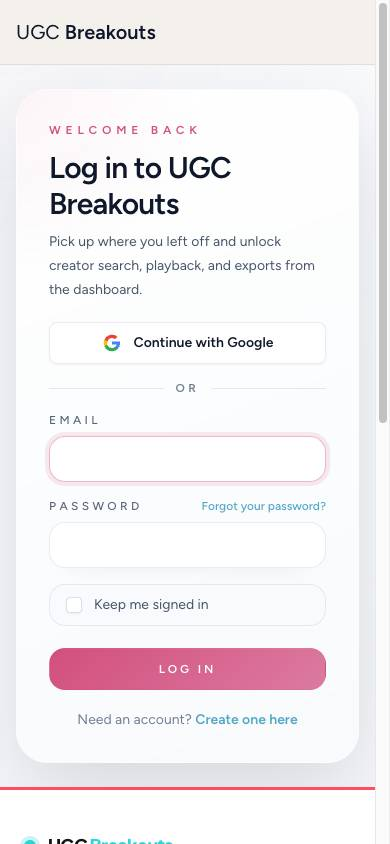 |
| 17 | Normal | Contact#32 | “Unlimited” line. /contact says “If you're asking about AI Analysis, tell us what unlimited access would help you do.” Pro is 100 analyses. | Cut the line, or “If you're asking about video analyses, tell us what you'd use more of.” | 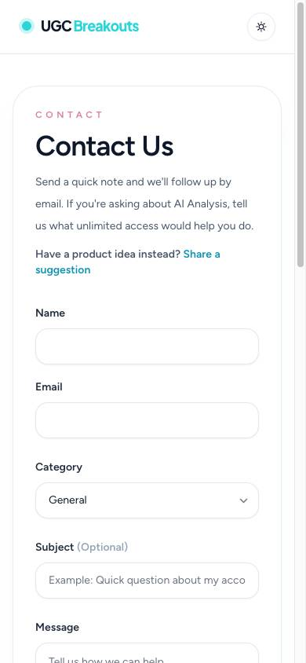 |
| 18 | Normal | Sales pages (phone)new | Page scrolls sideways. At phone width the header “Try for free” button runs about 18px past the right edge on /, /top-breakouts and /find-breakouts. | Header fits the screen at 360px and up. No sideways scroll. | 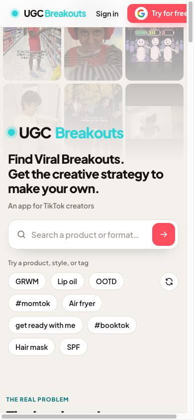 |
17 more items (menu, top bar, Home sections, how-to video, Top Breakouts cards, sales page refresh and the rest of Ivan's 1 Oct list) wait for the UB 3.1 build. No live work on those.